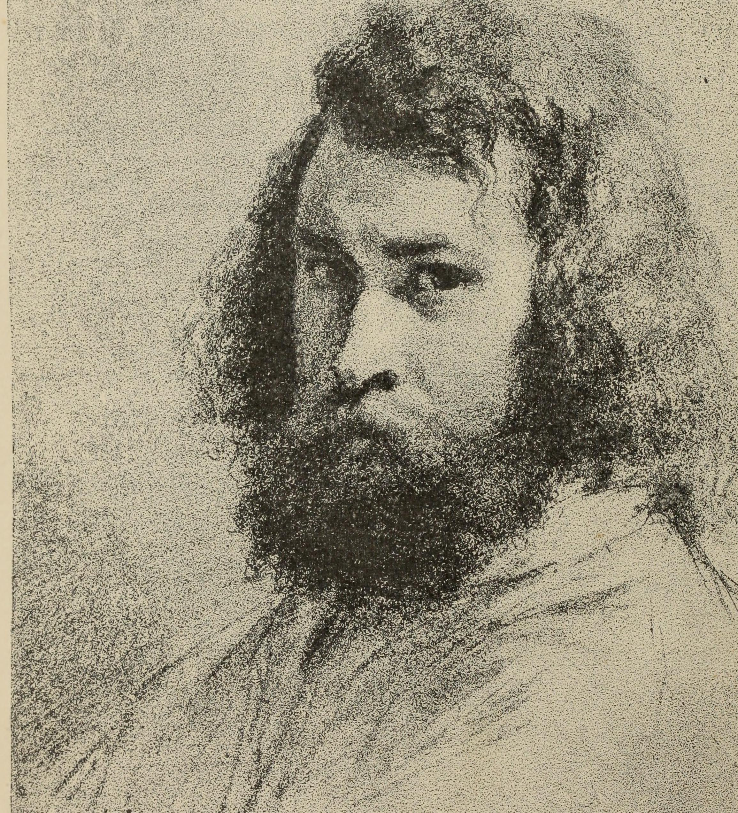

Jean-François Millet
让-弗朗索瓦·米勒 1814.10.04 - 1875.01.20

Figure 1: 肖像画
法国巴比松派画家，出生于法国诺曼底半岛格鲁什村（Gruchy），耕农家庭之子；童年时曾帮助父亲在田间劳动，因父母忙于田里工作，祖母是他从小最亲近的人。1849年巴黎流行黑热病，米勒携家迁居到巴黎郊区枫丹白露附近的巴比松村，这时米勒已35岁。在巴比松村米勒结识了柯罗、卢梭、特罗容等画家，在这个穷困闭塞的乡村，米勒一住就是27年之久。米勒对大自然和农村生活有一种特殊的深厚感情，他早起晚归，上午在田间劳动，下午就在不大通光的小屋子里作画。米勒的生活异常困苦，但这并没有减弱他对艺术的酷爱和追求，他常常由于没钱买颜料就自己制造木炭条画素描。米勒爱生活、爱劳动、爱农民，他曾说过：“无论如何农民这个题材对于我是最合适的。”米勒在巴比松的第一幅代表作品是《播种者》，以后相继创作了《拾穗者》和《晚钟》等名作。他以写实手法描绘的乡村风俗画闻名法国画坛，被认为是写实主义艺术运动的参与者。罗曼·罗兰在所著的《米勒传》指出：“米勒，这位将全部精神灌注于永恒的意义胜过刹那的古典大师，从来就没有一位画家像他这般，将万物所归的大地给予如此雄壮又伟大的感觉与表现。”

Figure 2: The Winnower, 1848

Figure 3: The Sower, 1850

Figure 4: Paysanne enfournant son pain, 1854

Figure 5: The Potato Harvest, 1855

Figure 6: Gleaners, 1857

Figure 7: L’Angélus, 1857

Figure 8: The Sheepfold, Moonlight, 1860

Figure 9: The Knitting Lesson, 1860

Figure 10: The Sower, 1865

Figure 11: La fin de la journée;effect du soir, 1865-1867

Figure 12: Spring Landscape with Rainbow 1868-1873

Figure 13: Femme coud à la lumière de la lampe, 1870-1872

Figure 14: L’Eglise de Gréville, 1871

Figure 15: Hunting Birds at Night, 1874